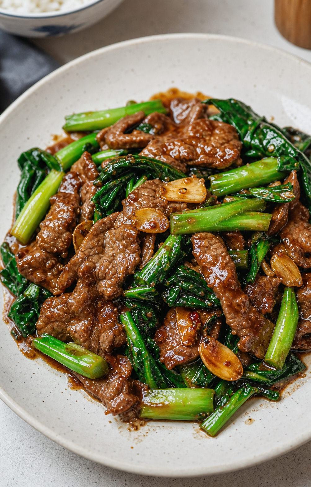

← 返回目錄
港式沙嗲牛肉炒芥蘭
經典港式小炒，牛肉嫩滑、芥蘭爽脆，沙嗲醬帶出濃郁茶記風味。

食材
類別
材料
份量
主料
牛肉（逆紋切片）
200 克
芥蘭（去葉取梗，斜切片）
300 克
蒜頭（切片）
3 瓣
醃料
鹽 1 茶匙、生抽 1 湯匙、老抽 1 茶匙、生粉 1 湯匙、油 1 湯匙
全份
調味
沙嗲醬
1 湯匙、
蠔油
1 湯匙、水 3 湯匙
全份
做法
牛肉逆紋切片，加入鹽、生抽、老抽、生粉、油拌勻，醃製 15 分鐘。
芥蘭洗淨，去除葉子，莖部斜切成片；蒜頭切片備用。
燒一鍋水，加入少許鹽及油，芥蘭焯水 30 秒後撈起瀝乾，保持翠綠爽脆。
鍋中加油，炒牛肉至八成熟，取出備用。
原鍋再加少許油，爆香蒜片，加入芥蘭快炒 1 分鐘。
加入沙嗲醬、蠔油、水，攪拌均勻至醬汁微微滾動。
將牛肉回鍋，與芥蘭充分混合，試味後即可盛盤。
關鍵技巧
芥蘭不用炒太耐，先焯水能保留翠綠同爽脆。
牛肉一定要逆紋切片，再用生粉同油醃，先會嫩滑。
沙嗲醬與蠔油落少少就夠，太多會蓋過菜香。
營養價值
牛肉提供蛋白質、鐵質及維他命 B 群。
芥蘭含膳食纖維、維生素 C、葉酸與鈣質。
整道菜兼有蛋白質與蔬菜纖維，適合做一碟送飯小炒。
食療 / 常見作用
芥蘭屬清爽蔬菜，配合焯水與快炒可保持口感。
牛肉經醃製後較嫩滑，適合做家常快炒。
沙嗲醬令味道更濃郁，適合港式茶餐廳風味。
飲食提示
若想少油，可減少芥蘭焯水後炒製用油量。
牛肉炒至八成熟即可，回鍋再煮會更滑。
鹹度可按沙嗲醬品牌調整，不同品牌味道差異較大。
適合配搭
配白飯、香米飯、蛋炒飯都好送飯。
可配凍檸茶或熱奶茶，做成茶記感覺更完整。
不適合人士注意
高血壓或需要控制鈉攝取人士要留意沙嗲醬及蠔油份量。
對牛肉或大豆製品敏感人士應避免食用相關材料。